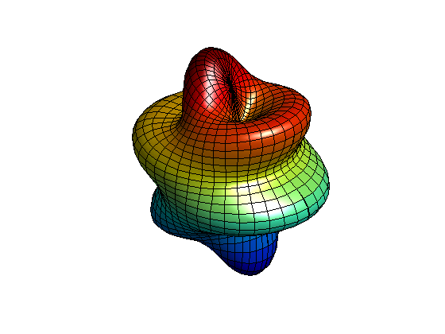

By Denise L. Chen 9-1-93.
Spherical harmonics are the spherical version of Fourier series. They can be used to model the free oscillations of the earth.
The image pictured is the spherical harmonic of degree 6, order 1, and amplitude 2 plotted on the surface of a sphere of radius 5.
% Define constants. degree = 6; order = 1; % Create the grid delta = pi/40; theta = 0 : delta : pi; % altitude phi = 0 : 2*delta : 2*pi; % azimuth [phi,theta] = meshgrid(phi,theta); % Calculate the harmonic Ymn = legendre(degree,cos(theta(:,1))); Ymn = Ymn(order+1,:)'; yy = Ymn; for kk = 2: size(theta,1) yy = [yy Ymn]; end; yy = yy.*cos(order*phi); order = max(max(abs(yy))); rho = 5 + 2*yy/order; % Apply spherical coordinate equations r = rho.*sin(theta); x = r.*cos(phi); % spherical coordinate equations y = r.*sin(phi); z = rho.*cos(theta); % Plot the surface surf(x,y,z) light lighting phong axis('square') axis([-5 5 -5 5 -5 5]) axis('off') view(40,30)